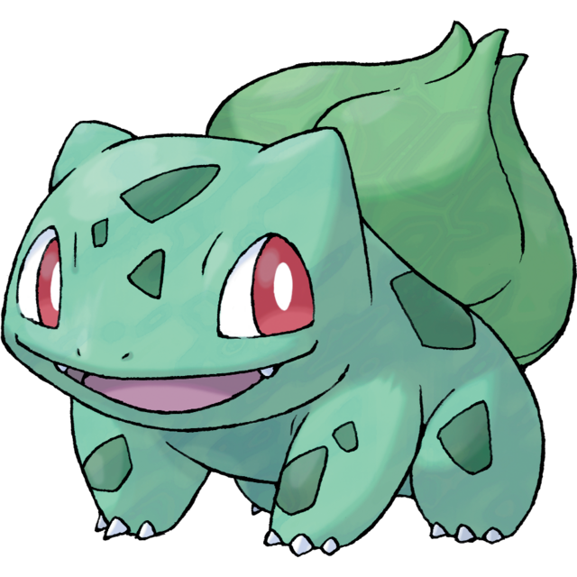
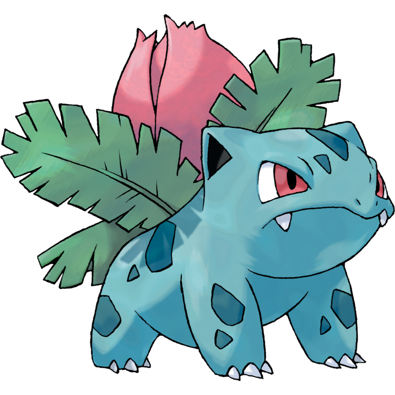
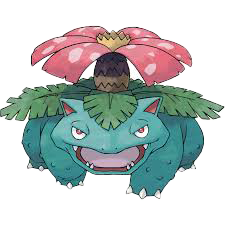

Bulbasaur was one of the three starter Pokémon in Pokèmon Red and Green, the first game in this franchise. Alongside Charmander and Squirtle, Bulbasaur has an evolutionary line of Ivysaur and Venusaur. A fun fact about Bulbasaur, it is one of two unevolved starter Pokémon that start as dual-typed instead of evolving into a dual-type. The other Pokémon is Rowlet. Both are grass starter Pokémon.


